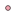
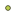

<!doctype html>
<html lang="en">
    <head>
        <meta charset="utf-8">
        <meta http-equiv="X-UA-Compatible" content="IE=edge">
        <meta name="viewport" content="initial-scale=1,user-scalable=no,maximum-scale=1,width=device-width">
        <meta name="mobile-web-app-capable" content="yes">
        <meta name="apple-mobile-web-app-capable" content="yes">
        <link rel="stylesheet" href="css/leaflet.css">
        <link rel="stylesheet" href="css/L.Control.Layers.Tree.css">
        <link rel="stylesheet" href="css/qgis2web.css">
        <link rel="stylesheet" href="css/fontawesome-all.min.css">
        <link rel="stylesheet" href="css/leaflet.photon.css">
        <style>
        html, body, #map {
            width: 100%;
            height: 100%;
            padding: 0;
            margin: 0;
        }
        </style>
        <title></title>
    </head>
    <body>
        <div id="map">
        </div>
        <script src="js/qgis2web_expressions.js"></script>
        <script src="js/leaflet.js"></script>
        <script src="js/L.Control.Layers.Tree.min.js"></script>
        <script src="js/leaflet.rotatedMarker.js"></script>
        <script src="js/leaflet.pattern.js"></script>
        <script src="js/leaflet-hash.js"></script>
        <script src="js/Autolinker.min.js"></script>
        <script src="js/rbush.min.js"></script>
        <script src="js/labelgun.min.js"></script>
        <script src="js/labels.js"></script>
        <script src="js/leaflet.photon.js"></script>
        <script src="data/submarine_cables_1.js"></script>
        <script src="data/fiber_coverageOokla_2.js"></script>
        <script src="data/coverage_5g_4.js"></script>
        <script src="data/current_backbone_5.js"></script>
        <script src="data/middle_mile_6.js"></script>
        <script src="data/last_mile_7.js"></script>
        <script src="data/targets_8.js"></script>
        <script>
        var map = L.map('map', {
            zoomControl:false, maxZoom:20, minZoom:1
        })
        var hash = new L.Hash(map);
        map.attributionControl.setPrefix('<a href="https://github.com/tomchadwin/qgis2web" target="_blank">qgis2web</a> &middot; <a href="https://leafletjs.com" title="A JS library for interactive maps">Leaflet</a> &middot; <a href="https://qgis.org">QGIS</a>');
        var autolinker = new Autolinker({truncate: {length: 30, location: 'smart'}});
        // remove popup's row if "visible-with-data"
        function removeEmptyRowsFromPopupContent(content, feature) {
         var tempDiv = document.createElement('div');
         tempDiv.innerHTML = content;
         var rows = tempDiv.querySelectorAll('tr');
         for (var i = 0; i < rows.length; i++) {
             var td = rows[i].querySelector('td.visible-with-data');
             var key = td ? td.id : '';
             if (td && td.classList.contains('visible-with-data') && feature.properties[key] == null) {
                 rows[i].parentNode.removeChild(rows[i]);
             }
         }
         return tempDiv.innerHTML;
        }
        // modify popup if contains media
        function addClassToPopupIfMedia(content, popup) {
            var tempDiv = document.createElement('div');
            tempDiv.innerHTML = content;
            var imgTd = tempDiv.querySelector('td img');
            if (imgTd) {
                var src = imgTd.getAttribute('src');
                if (/\.(jpg|jpeg|png|gif|bmp|webp|avif)$/i.test(src)) {
                    popup._contentNode.classList.add('media');
                    setTimeout(function() {
                        popup.update();
                    }, 10);
                } else if (/\.(mp3|wav|ogg|aac)$/i.test(src)) {
                    var audio = document.createElement('audio');
                    audio.controls = true;
                    audio.src = src;
                    imgTd.parentNode.replaceChild(audio, imgTd);
                    popup._contentNode.classList.add('media');
                    setTimeout(function() {
                        popup.setContent(tempDiv.innerHTML);
                        popup.update();
                    }, 10);
                } else if (/\.(mp4|webm|ogg|mov)$/i.test(src)) {
                    var video = document.createElement('video');
                    video.controls = true;
                    video.src = src;
                    video.style.width = "400px";
                    video.style.height = "300px";
                    video.style.maxHeight = "60vh";
                    video.style.maxWidth = "60vw";
                    imgTd.parentNode.replaceChild(video, imgTd);
                    popup._contentNode.classList.add('media');
                    // Aggiorna il popup quando il video carica i metadati
                    video.addEventListener('loadedmetadata', function() {
                        popup.update();
                    });
                    setTimeout(function() {
                        popup.setContent(tempDiv.innerHTML);
                        popup.update();
                    }, 10);
                } else {
                    popup._contentNode.classList.remove('media');
                }
            } else {
                popup._contentNode.classList.remove('media');
            }
        }
        var zoomControl = L.control.zoom({
            position: 'topleft'
        }).addTo(map);
        var bounds_group = new L.featureGroup([]);
        function setBounds() {
            if (bounds_group.getLayers().length) {
                map.fitBounds(bounds_group.getBounds());
            }
            map.setMaxBounds(map.getBounds());
            map.setMinZoom(map.getZoom());
        }
        map.createPane('pane_EsriWorldTopographic_0');
        map.getPane('pane_EsriWorldTopographic_0').style.zIndex = 400;
        var layer_EsriWorldTopographic_0 = L.tileLayer('https://services.arcgisonline.com/ArcGIS/rest/services/World_Topo_Map/MapServer/tile/{z}/{y}/{x}', {
            pane: 'pane_EsriWorldTopographic_0',
            opacity: 1.0,
            attribution: '',
            minZoom: 1,
            maxZoom: 20,
            minNativeZoom: 0,
            maxNativeZoom: 18
        });
        layer_EsriWorldTopographic_0;
        map.addLayer(layer_EsriWorldTopographic_0);
        function pop_submarine_cables_1(feature, layer) {
            var popupContent = '<table>\
                    <tr>\
                        <td colspan="2">' + (feature.properties['fid'] !== null ? autolinker.link(String(feature.properties['fid']).replace(/'/g, '\'').toLocaleString()) : '') + '</td>\
                    </tr>\
                    <tr>\
                        <td colspan="2">' + (feature.properties['id'] !== null ? autolinker.link(String(feature.properties['id']).replace(/'/g, '\'').toLocaleString()) : '') + '</td>\
                    </tr>\
                    <tr>\
                        <td colspan="2">' + (feature.properties['name'] !== null ? autolinker.link(String(feature.properties['name']).replace(/'/g, '\'').toLocaleString()) : '') + '</td>\
                    </tr>\
                    <tr>\
                        <td colspan="2">' + (feature.properties['color'] !== null ? autolinker.link(String(feature.properties['color']).replace(/'/g, '\'').toLocaleString()) : '') + '</td>\
                    </tr>\
                    <tr>\
                        <td colspan="2">' + (feature.properties['feature_id'] !== null ? autolinker.link(String(feature.properties['feature_id']).replace(/'/g, '\'').toLocaleString()) : '') + '</td>\
                    </tr>\
                </table>';
            var content = removeEmptyRowsFromPopupContent(popupContent, feature);
			layer.on('popupopen', function(e) {
				addClassToPopupIfMedia(content, e.popup);
			});
			layer.bindPopup(content, { maxHeight: 400 });
        }

        function style_submarine_cables_1_0() {
            return {
                pane: 'pane_submarine_cables_1',
                opacity: 1,
                color: 'rgba(203,203,203,1.0)',
                dashArray: '',
                lineCap: 'round',
                lineJoin: 'round',
                weight: 3.0,
                fillOpacity: 0,
                interactive: false,
            }
        }
        map.createPane('pane_submarine_cables_1');
        map.getPane('pane_submarine_cables_1').style.zIndex = 401;
        map.getPane('pane_submarine_cables_1').style['mix-blend-mode'] = 'normal';
        var layer_submarine_cables_1 = new L.geoJson(json_submarine_cables_1, {
            attribution: '',
            interactive: false,
            dataVar: 'json_submarine_cables_1',
            layerName: 'layer_submarine_cables_1',
            pane: 'pane_submarine_cables_1',
            onEachFeature: pop_submarine_cables_1,
            style: style_submarine_cables_1_0,
        });
        bounds_group.addLayer(layer_submarine_cables_1);
        map.addLayer(layer_submarine_cables_1);
        function pop_fiber_coverageOokla_2(feature, layer) {
            var popupContent = '<table>\
                    <tr>\
                        <td colspan="2">' + (feature.properties['fid'] !== null ? autolinker.link(String(feature.properties['fid']).replace(/'/g, '\'').toLocaleString()) : '') + '</td>\
                    </tr>\
                    <tr>\
                        <td colspan="2">' + (feature.properties['index'] !== null ? autolinker.link(String(feature.properties['index']).replace(/'/g, '\'').toLocaleString()) : '') + '</td>\
                    </tr>\
                </table>';
            var content = removeEmptyRowsFromPopupContent(popupContent, feature);
			layer.on('popupopen', function(e) {
				addClassToPopupIfMedia(content, e.popup);
			});
			layer.bindPopup(content, { maxHeight: 400 });
        }

        function style_fiber_coverageOokla_2_0() {
            return {
                pane: 'pane_fiber_coverageOokla_2',
                opacity: 1,
                color: 'rgba(247,225,55,0.0)',
                dashArray: '',
                lineCap: 'butt',
                lineJoin: 'miter',
                weight: 1.0, 
                fill: true,
                fillOpacity: 1,
                fillColor: 'rgba(51,255,253,0.5)',
                interactive: false,
            }
        }
        map.createPane('pane_fiber_coverageOokla_2');
        map.getPane('pane_fiber_coverageOokla_2').style.zIndex = 402;
        map.getPane('pane_fiber_coverageOokla_2').style['mix-blend-mode'] = 'normal';
        var layer_fiber_coverageOokla_2 = new L.geoJson(json_fiber_coverageOokla_2, {
            attribution: '',
            interactive: false,
            dataVar: 'json_fiber_coverageOokla_2',
            layerName: 'layer_fiber_coverageOokla_2',
            pane: 'pane_fiber_coverageOokla_2',
            onEachFeature: pop_fiber_coverageOokla_2,
            style: style_fiber_coverageOokla_2_0,
        });
        bounds_group.addLayer(layer_fiber_coverageOokla_2);
        map.createPane('pane_population_counts_3');
        map.getPane('pane_population_counts_3').style.zIndex = 403;
        var img_population_counts_3 = 'data/population_counts_3.png';
        var img_bounds_population_counts_3 = [[7.506485300379705,116.93333214641818],[21.06666691805889,125.22144746769068]];
        var layer_population_counts_3 = new L.imageOverlay(img_population_counts_3,
                                              img_bounds_population_counts_3,
                                              {pane: 'pane_population_counts_3'});
        bounds_group.addLayer(layer_population_counts_3);
        function pop_coverage_5g_4(feature, layer) {
            var popupContent = '<table>\
                    <tr>\
                        <td colspan="2">' + (feature.properties['fid'] !== null ? autolinker.link(String(feature.properties['fid']).replace(/'/g, '\'').toLocaleString()) : '') + '</td>\
                    </tr>\
                    <tr>\
                        <td colspan="2">' + (feature.properties['DN'] !== null ? autolinker.link(String(feature.properties['DN']).replace(/'/g, '\'').toLocaleString()) : '') + '</td>\
                    </tr>\
                    <tr>\
                        <td colspan="2">' + (feature.properties['radio_type'] !== null ? autolinker.link(String(feature.properties['radio_type']).replace(/'/g, '\'').toLocaleString()) : '') + '</td>\
                    </tr>\
                </table>';
            var content = removeEmptyRowsFromPopupContent(popupContent, feature);
			layer.on('popupopen', function(e) {
				addClassToPopupIfMedia(content, e.popup);
			});
			layer.bindPopup(content, { maxHeight: 400 });
        }

        function style_coverage_5g_4_0() {
            return {
                pane: 'pane_coverage_5g_4',
                opacity: 1,
                color: 'rgba(247,225,55,0.0)',
                dashArray: '',
                lineCap: 'butt',
                lineJoin: 'miter',
                weight: 1.0, 
                fill: true,
                fillOpacity: 1,
                fillColor: 'rgba(225,89,137,1.0)',
                interactive: false,
            }
        }
        map.createPane('pane_coverage_5g_4');
        map.getPane('pane_coverage_5g_4').style.zIndex = 404;
        map.getPane('pane_coverage_5g_4').style['mix-blend-mode'] = 'normal';
        var layer_coverage_5g_4 = new L.geoJson(json_coverage_5g_4, {
            attribution: '',
            interactive: false,
            dataVar: 'json_coverage_5g_4',
            layerName: 'layer_coverage_5g_4',
            pane: 'pane_coverage_5g_4',
            onEachFeature: pop_coverage_5g_4,
            style: style_coverage_5g_4_0,
        });
        bounds_group.addLayer(layer_coverage_5g_4);
        function pop_current_backbone_5(feature, layer) {
            var popupContent = '<table>\
                    <tr>\
                        <td colspan="2">' + (feature.properties['fid'] !== null ? autolinker.link(String(feature.properties['fid']).replace(/'/g, '\'').toLocaleString()) : '') + '</td>\
                    </tr>\
                    <tr>\
                        <td colspan="2">' + (feature.properties['operator_type'] !== null ? autolinker.link(String(feature.properties['operator_type']).replace(/'/g, '\'').toLocaleString()) : '') + '</td>\
                    </tr>\
                    <tr>\
                        <td colspan="2">' + (feature.properties['length'] !== null ? autolinker.link(String(feature.properties['length']).replace(/'/g, '\'').toLocaleString()) : '') + '</td>\
                    </tr>\
                </table>';
            var content = removeEmptyRowsFromPopupContent(popupContent, feature);
			layer.on('popupopen', function(e) {
				addClassToPopupIfMedia(content, e.popup);
			});
			layer.bindPopup(content, { maxHeight: 400 });
        }

        function style_current_backbone_5_0(feature) {
            switch(String(feature.properties['operator_type'])) {
                case 'private':
                    return {
                pane: 'pane_current_backbone_5',
                opacity: 1,
                color: 'rgba(0,0,0,1.0)',
                dashArray: '',
                lineCap: 'square',
                lineJoin: 'bevel',
                weight: 4.0,
                fillOpacity: 0,
                interactive: false,
            }
                    break;
                case 'public':
                    return {
                pane: 'pane_current_backbone_5',
                opacity: 1,
                color: 'rgba(141,90,153,1.0)',
                dashArray: '',
                lineCap: 'square',
                lineJoin: 'bevel',
                weight: 4.0,
                fillOpacity: 0,
                interactive: false,
            }
                    break;
            }
        }
        map.createPane('pane_current_backbone_5');
        map.getPane('pane_current_backbone_5').style.zIndex = 405;
        map.getPane('pane_current_backbone_5').style['mix-blend-mode'] = 'normal';
        var layer_current_backbone_5 = new L.geoJson(json_current_backbone_5, {
            attribution: '',
            interactive: false,
            dataVar: 'json_current_backbone_5',
            layerName: 'layer_current_backbone_5',
            pane: 'pane_current_backbone_5',
            onEachFeature: pop_current_backbone_5,
            style: style_current_backbone_5_0,
        });
        bounds_group.addLayer(layer_current_backbone_5);
        map.addLayer(layer_current_backbone_5);
        function pop_middle_mile_6(feature, layer) {
            var popupContent = '<table>\
                    <tr>\
                        <td colspan="2">' + (feature.properties['fid'] !== null ? autolinker.link(String(feature.properties['fid']).replace(/'/g, '\'').toLocaleString()) : '') + '</td>\
                    </tr>\
                </table>';
            var content = removeEmptyRowsFromPopupContent(popupContent, feature);
			layer.on('popupopen', function(e) {
				addClassToPopupIfMedia(content, e.popup);
			});
			layer.bindPopup(content, { maxHeight: 400 });
        }

        function style_middle_mile_6_0() {
            return {
                pane: 'pane_middle_mile_6',
                opacity: 1,
                color: 'rgba(0,112,188,1.0)',
                dashArray: '',
                lineCap: 'square',
                lineJoin: 'bevel',
                weight: 2.0,
                fillOpacity: 0,
                interactive: false,
            }
        }
        map.createPane('pane_middle_mile_6');
        map.getPane('pane_middle_mile_6').style.zIndex = 406;
        map.getPane('pane_middle_mile_6').style['mix-blend-mode'] = 'darken';
        var layer_middle_mile_6 = new L.geoJson(json_middle_mile_6, {
            attribution: '',
            interactive: false,
            dataVar: 'json_middle_mile_6',
            layerName: 'layer_middle_mile_6',
            pane: 'pane_middle_mile_6',
            onEachFeature: pop_middle_mile_6,
            style: style_middle_mile_6_0,
        });
        bounds_group.addLayer(layer_middle_mile_6);
        map.addLayer(layer_middle_mile_6);
        function pop_last_mile_7(feature, layer) {
            var popupContent = '<table>\
                    <tr>\
                        <td colspan="2">' + (feature.properties['fid'] !== null ? autolinker.link(String(feature.properties['fid']).replace(/'/g, '\'').toLocaleString()) : '') + '</td>\
                    </tr>\
                    <tr>\
                        <td colspan="2">' + (feature.properties['poi_id'] !== null ? autolinker.link(String(feature.properties['poi_id']).replace(/'/g, '\'').toLocaleString()) : '') + '</td>\
                    </tr>\
                    <tr>\
                        <td colspan="2">' + (feature.properties['amenity'] !== null ? autolinker.link(String(feature.properties['amenity']).replace(/'/g, '\'').toLocaleString()) : '') + '</td>\
                    </tr>\
                    <tr>\
                        <td colspan="2">' + (feature.properties['osm_id'] !== null ? autolinker.link(String(feature.properties['osm_id']).replace(/'/g, '\'').toLocaleString()) : '') + '</td>\
                    </tr>\
                    <tr>\
                        <td colspan="2">' + (feature.properties['osm_type'] !== null ? autolinker.link(String(feature.properties['osm_type']).replace(/'/g, '\'').toLocaleString()) : '') + '</td>\
                    </tr>\
                    <tr>\
                        <td colspan="2">' + (feature.properties['poi_type'] !== null ? autolinker.link(String(feature.properties['poi_type']).replace(/'/g, '\'').toLocaleString()) : '') + '</td>\
                    </tr>\
                    <tr>\
                        <td colspan="2">' + (feature.properties['lat'] !== null ? autolinker.link(String(feature.properties['lat']).replace(/'/g, '\'').toLocaleString()) : '') + '</td>\
                    </tr>\
                    <tr>\
                        <td colspan="2">' + (feature.properties['lon'] !== null ? autolinker.link(String(feature.properties['lon']).replace(/'/g, '\'').toLocaleString()) : '') + '</td>\
                    </tr>\
                </table>';
            var content = removeEmptyRowsFromPopupContent(popupContent, feature);
			layer.on('popupopen', function(e) {
				addClassToPopupIfMedia(content, e.popup);
			});
			layer.bindPopup(content, { maxHeight: 400 });
        }

        function style_last_mile_7_0() {
            return {
                pane: 'pane_last_mile_7',
                opacity: 1,
                color: 'rgba(0,0,4,1.0)',
                dashArray: '',
                lineCap: 'square',
                lineJoin: 'bevel',
                weight: 1.0,
                fillOpacity: 0,
                interactive: false,
            }
        }
        map.createPane('pane_last_mile_7');
        map.getPane('pane_last_mile_7').style.zIndex = 407;
        map.getPane('pane_last_mile_7').style['mix-blend-mode'] = 'normal';
        var layer_last_mile_7 = new L.geoJson(json_last_mile_7, {
            attribution: '',
            interactive: false,
            dataVar: 'json_last_mile_7',
            layerName: 'layer_last_mile_7',
            pane: 'pane_last_mile_7',
            onEachFeature: pop_last_mile_7,
            style: style_last_mile_7_0,
        });
        bounds_group.addLayer(layer_last_mile_7);
        map.addLayer(layer_last_mile_7);
        function pop_targets_8(feature, layer) {
            var popupContent = '<table>\
                    <tr>\
                        <th scope="row">poi_type</th>\
                        <td>' + (feature.properties['poi_type'] !== null ? autolinker.link(String(feature.properties['poi_type']).replace(/'/g, '\'').toLocaleString()) : '') + '</td>\
                    </tr>\
                    <tr>\
                        <th scope="row">technology</th>\
                        <td>' + (feature.properties['technology'] !== null ? autolinker.link(String(feature.properties['technology']).replace(/'/g, '\'').toLocaleString()) : '') + '</td>\
                    </tr>\
                    <tr>\
                        <th scope="row">pop_within_3km</th>\
                        <td>' + (feature.properties['pop_within_3km'] !== null ? autolinker.link(String(feature.properties['pop_within_3km']).replace(/'/g, '\'').toLocaleString()) : '') + '</td>\
                    </tr>\
                </table>';
            var content = removeEmptyRowsFromPopupContent(popupContent, feature);
			layer.on('popupopen', function(e) {
				addClassToPopupIfMedia(content, e.popup);
			});
			layer.bindPopup(content, { maxHeight: 400 });
        }

        function style_targets_8_0(feature) {
            switch(String(feature.properties['technology'])) {
                case 'fiber':
                    return {
                pane: 'pane_targets_8',
                radius: 3.5,
                opacity: 1,
                color: 'rgba(0,0,0,0.8)',
                dashArray: '',
                lineCap: 'butt',
                lineJoin: 'miter',
                weight: 1.0,
                fill: true,
                fillOpacity: 1,
                fillColor: 'rgba(255,255,255,0.8)',
                interactive: true,
            }
                    break;
                case 'p2area':
                    return {
                pane: 'pane_targets_8',
                radius: 3.5,
                opacity: 1,
                color: 'rgba(0,0,0,0.8)',
                dashArray: '',
                lineCap: 'butt',
                lineJoin: 'miter',
                weight: 1.0,
                fill: true,
                fillOpacity: 1,
                fillColor: 'rgba(243,166,178,0.8)',
                interactive: true,
            }
                    break;
                case 'satellite':
                    return {
                pane: 'pane_targets_8',
                radius: 3.5,
                opacity: 1,
                color: 'rgba(0,0,0,0.8)',
                dashArray: '',
                lineCap: 'butt',
                lineJoin: 'miter',
                weight: 1.0,
                fill: true,
                fillOpacity: 1,
                fillColor: 'rgba(190,207,80,0.8)',
                interactive: true,
            }
                    break;
            }
        }
        map.createPane('pane_targets_8');
        map.getPane('pane_targets_8').style.zIndex = 408;
        map.getPane('pane_targets_8').style['mix-blend-mode'] = 'normal';
        var layer_targets_8 = new L.geoJson(json_targets_8, {
            attribution: '',
            interactive: true,
            dataVar: 'json_targets_8',
            layerName: 'layer_targets_8',
            pane: 'pane_targets_8',
            onEachFeature: pop_targets_8,
            pointToLayer: function (feature, latlng) {
                var context = {
                    feature: feature,
                    variables: {}
                };
                return L.circleMarker(latlng, style_targets_8_0(feature));
            },
        });
        bounds_group.addLayer(layer_targets_8);
        map.addLayer(layer_targets_8);
        var overlaysTree = [
            {label: 'targets<br /><table><tr><td style="text-align: center;"></td><td>fiber</td></tr><tr><td style="text-align: center;"></td><td>5G</td></tr><tr><td style="text-align: center;"></td><td>satellite</td></tr></table>', layer: layer_targets_8},
            {label: ' last_mile', layer: layer_last_mile_7},
            {label: ' middle_mile', layer: layer_middle_mile_6},
            {label: 'current_backbone<br /><table><tr><td style="text-align: center;"></td><td>private</td></tr><tr><td style="text-align: center;"></td><td>public</td></tr></table>', layer: layer_current_backbone_5},
            {label: ' coverage_5g', layer: layer_coverage_5g_4},
            {label: "population_counts", layer: layer_population_counts_3},
            {label: ' fiber_coverage (Ookla)', layer: layer_fiber_coverageOokla_2},
            {label: ' submarine_cables', layer: layer_submarine_cables_1},
            {label: "Esri World Topographic", layer: layer_EsriWorldTopographic_0, radioGroup: 'bm' },]
        var lay = L.control.layers.tree(null, overlaysTree,{
            //namedToggle: true,
            //selectorBack: false,
            //closedSymbol: '&#8862; &#x1f5c0;',
            //openedSymbol: '&#8863; &#x1f5c1;',
            //collapseAll: 'Collapse all',
            //expandAll: 'Expand all',
            collapsed: false, 
        });
        lay.addTo(map);
		document.addEventListener("DOMContentLoaded", function() {
            // set new Layers List height which considers toggle icon
            function newLayersListHeight() {
                var layerScrollbarElement = document.querySelector('.leaflet-control-layers-scrollbar');
                if (layerScrollbarElement) {
                    var layersListElement = document.querySelector('.leaflet-control-layers-list');
                    var originalHeight = layersListElement.style.height 
                        || window.getComputedStyle(layersListElement).height;
                    var newHeight = parseFloat(originalHeight) - 50;
                    layersListElement.style.height = newHeight + 'px';
                }
            }
            var isLayersListExpanded = true;
            var controlLayersElement = document.querySelector('.leaflet-control-layers');
            var toggleLayerControl = document.querySelector('.leaflet-control-layers-toggle');
            // toggle Collapsed/Expanded and apply new Layers List height
            toggleLayerControl.addEventListener('click', function() {
                if (isLayersListExpanded) {
                    controlLayersElement.classList.remove('leaflet-control-layers-expanded');
                } else {
                    controlLayersElement.classList.add('leaflet-control-layers-expanded');
                }
                isLayersListExpanded = !isLayersListExpanded;
                newLayersListHeight()
            });	
			// apply new Layers List height if toggle layerstree
			if (controlLayersElement) {
				controlLayersElement.addEventListener('click', function(event) {
					var toggleLayerHeaderPointer = event.target.closest('.leaflet-layerstree-header-pointer span');
					if (toggleLayerHeaderPointer) {
						newLayersListHeight();
					}
				});
			}
            // Collapsed/Expanded at Start to apply new height
            setTimeout(function() {
                toggleLayerControl.click();
            }, 10);
            setTimeout(function() {
                toggleLayerControl.click();
            }, 10);
            // Collapsed touch/small screen
            var isSmallScreen = window.innerWidth < 650;
            if (isSmallScreen) {
                setTimeout(function() {
                    controlLayersElement.classList.remove('leaflet-control-layers-expanded');
                    isLayersListExpanded = !isLayersListExpanded;
                }, 500);
            }  
        });       
        setBounds();
        L.ImageOverlay.include({
            getBounds: function () {
                return this._bounds;
            }
        });
        </script>        
    </body>
</html>
